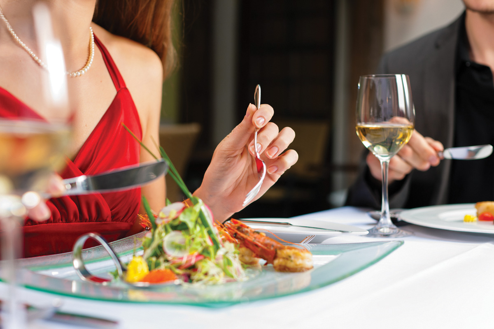

В деловой среде в Казахстане, как и во многих других культурах, правила поведения за столом имеют особое значение, поскольку они отражают уровень воспитанности, уважения и профессионализма участников бизнес-встречи.
В деловом этикете важно соблюдать определенные протоколы и проявлять уважение к гостям, особенно в Казахстане, где гостеприимство имеет особенно важное значение. Прежде всего, необходимо составить список приглашенных и отправить приглашения с четко выраженными деталями:
Приглашение желательно рассылать за неделю или за две недели до приема.
Если приглашение принято, нельзя впоследствии отказываться от него без веских причин.
В Казахстане чайные перерывы на работе и угощение гостей чаем уже стали обычным явлением, при этом сформировались определенные правила этикета. Психологи рекомендуют делать 10-минутные перерывы каждые два часа для повышения работоспособности. В эти моменты можно выпить чаю с коллегами, если условия позволяют.
Согласно правилам, чай или кофе предлагают гостям в различных ситуациях: при задержке встречи, через некоторое время после начала встречи, в середине длительной беседы или в перерыве на встречах и совещаниях.
Важно учитывать предпочтения гостей и их статусное положение при подаче чая. Традиционный заварной чай предпочтителен для важных партнеров, но при подаче пакетированного чая следует предоставить выбор сортов. При обслуживании гостей учитывается их статус, приоритет отдается старшему по статусу гостю.
Деловой обед представляет собой возможность объединить деловые обсуждения с приемом пищи. Как правило, такой подход приносит хорошие результаты. Такие обеды часто организуются:
Обычно деловой обед длится 2–2,5 часа. При организации важно учитывать значимость партнера, его культурные особенности и предпочтения в еде. Рекомендации по организации делового обеда:
Правила этикета в деловой среде не просто формальности, а инструмент, способствующий установлению профессиональных отношений и достижению успеха в бизнесе. В Казахстане, как и во многих других культурах, гостеприимство и внимание к гостям играют ключевую роль в деловой жизни, поэтому знание и соблюдение правил этикета необходимы для успешного ведения бизнеса. Все вышеперечисленные аспекты этикета, включая поведение за столом и угощение гостей, являются неотъемлемой частью деловой культуры и играют важную роль в успешном развитии бизнеса в Казахстане и за его пределами.